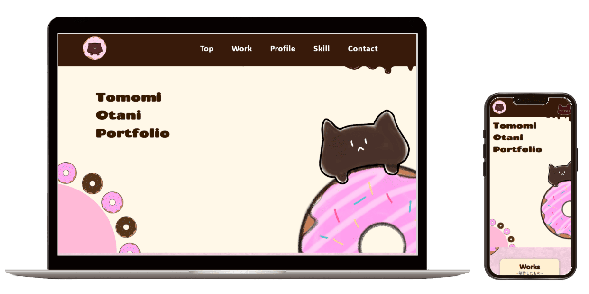

-
概要
就職活動時に使用することを目的とした、自身の経歴や制作物をまとめたポートフォリオサイト
-
目的
自身のスキルや実績をわかりやすく伝えるため、転職活動に向けてポートフォリオサイトを作成しました。採用担当者の方が効率的に情報を確認できるよう、これまでの制作実績やスキルの詳細をわかりやすく整理し、視覚的にも伝わりやすいデザインを意識しています。
-
ターゲット
採用担当者の方々
-
情報設計
まず採用担当者様に自分が『何ができるのか』を最初に伝えることを重視しました。そのため、㎸のすぐ下にWorksセクションを配置し、これまでの制作物をご覧いただける構成としています。制作物一覧には各制作物の概要を簡潔に記載し、一目で内容がわかるよう工夫しています。Worksセクションの下にはProfileセクションを設け、人物像やスキルの詳細を紹介する流れで構成しました。
-
デザイン
このポートフォリオサイトは、「親しみやすさ」と「自分らしさ」を表現することを意識してデザインいたしました。温かみのあるピンクとブラウンを使用し、背景にはドーナツやキャラクターのイラストを取り入れることで、柔らかく印象的なサイトを作成しました。 また、閲覧者が直感的に情報を把握できるよう、各セクションをカード形式で整理し、視認性と使いやすさを重視しております。UIデザインの工夫とHTML/CSS/JavaScriptを用いたコーディングによって、デザイン性と機能性のバランスを図りました。
配色
-
制作期間
2か月半（内容）
-
使用ツール
Figma/ Visual Studio Code/ ibisPaint


Works

PCデザイン
SPデザイン